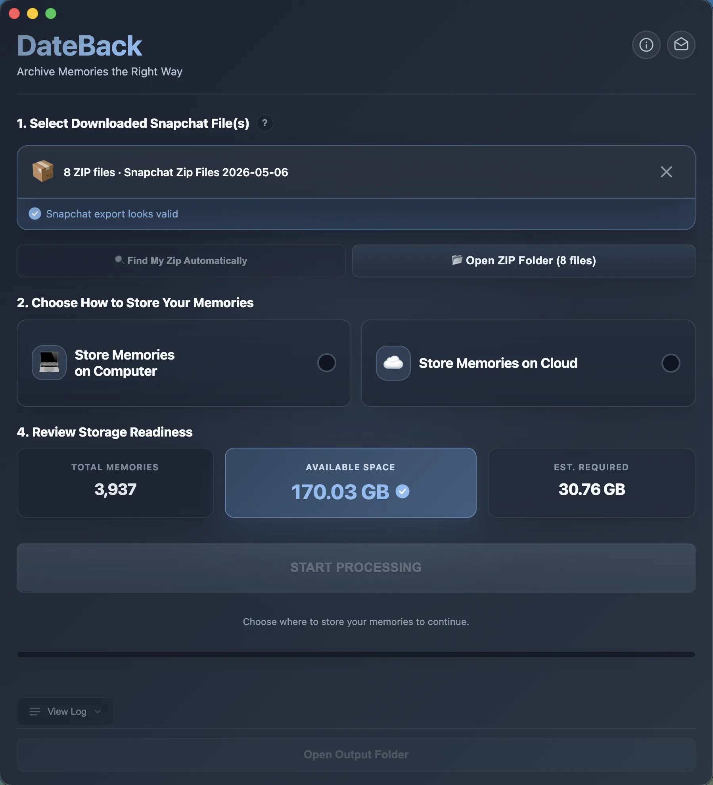
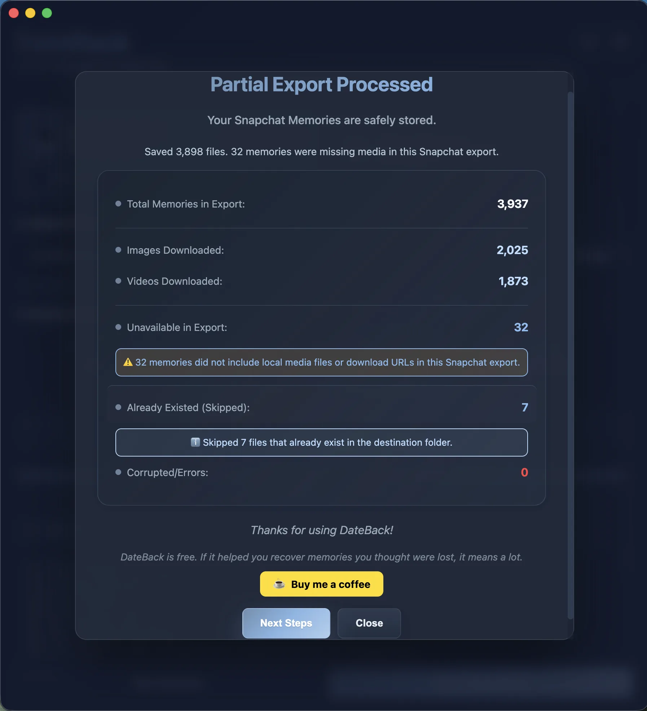
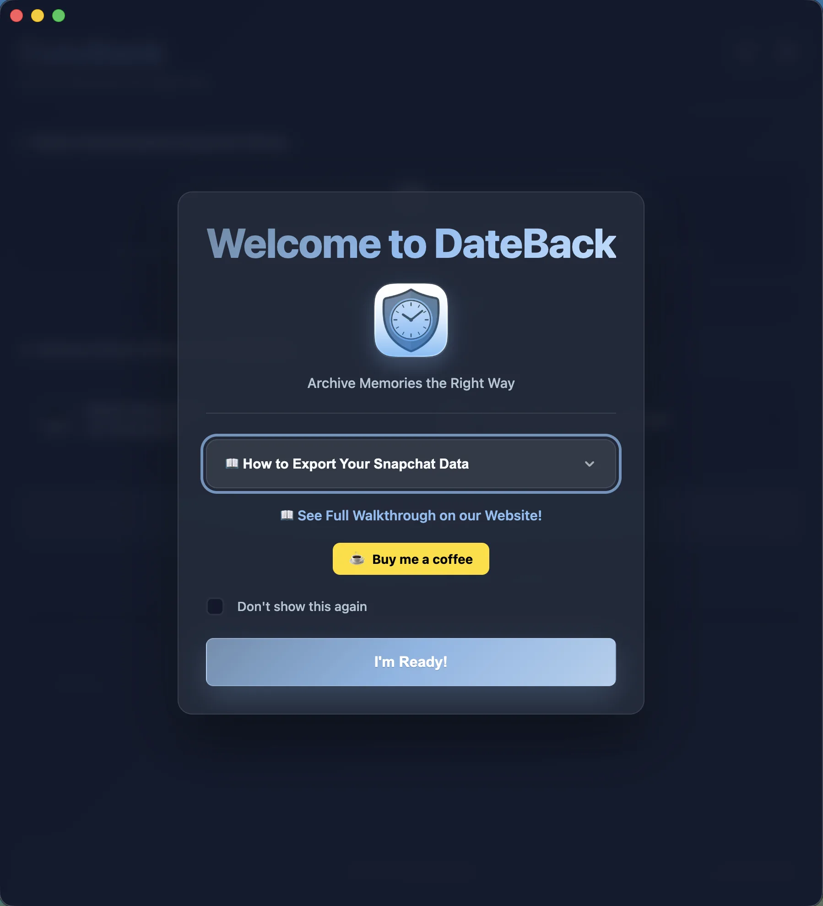
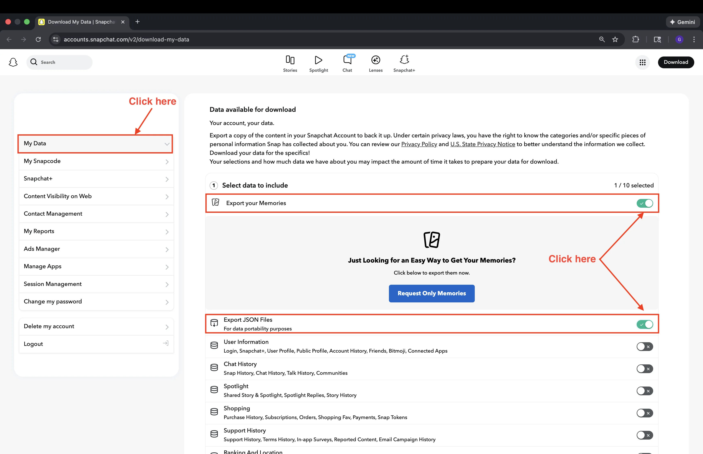
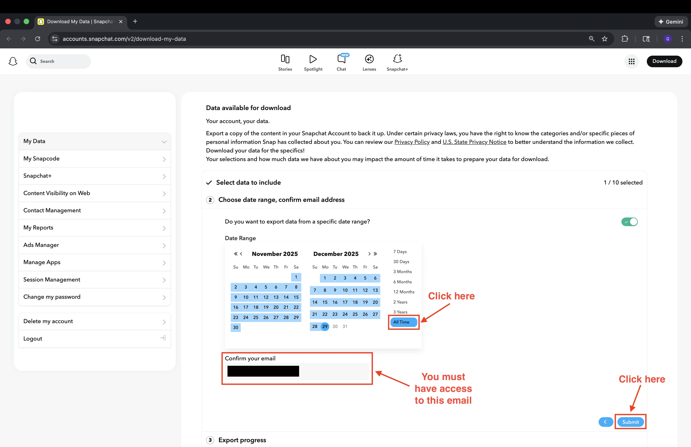
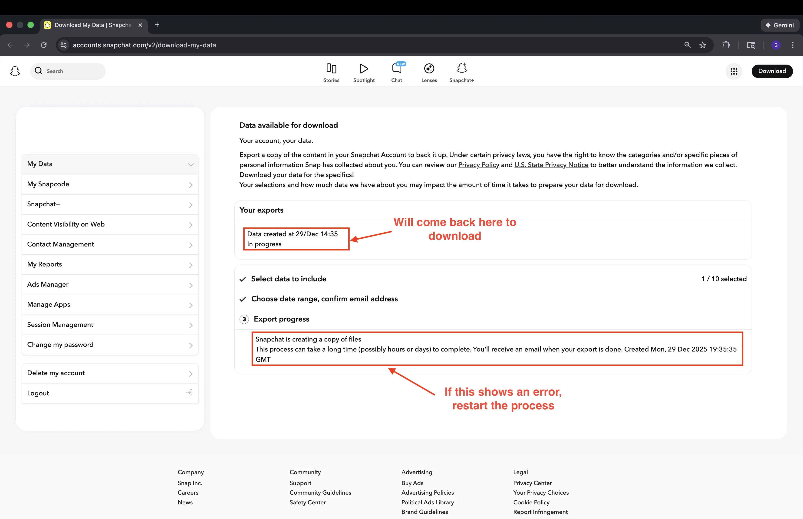
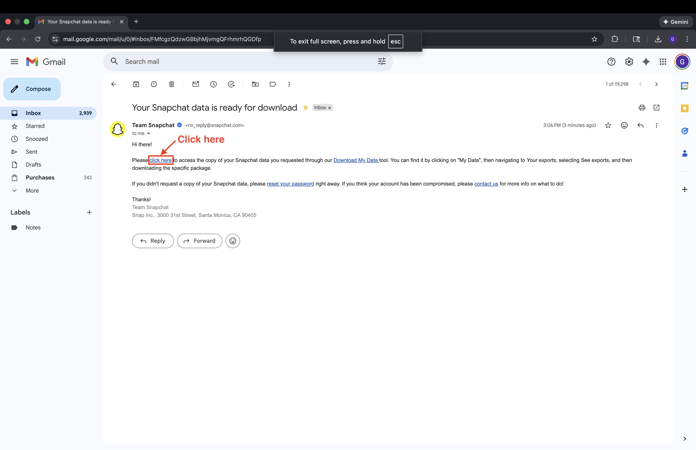
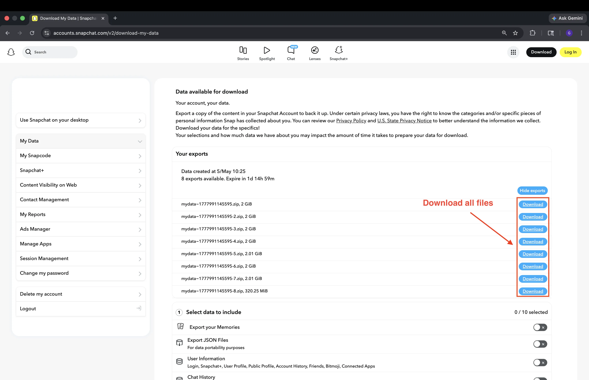
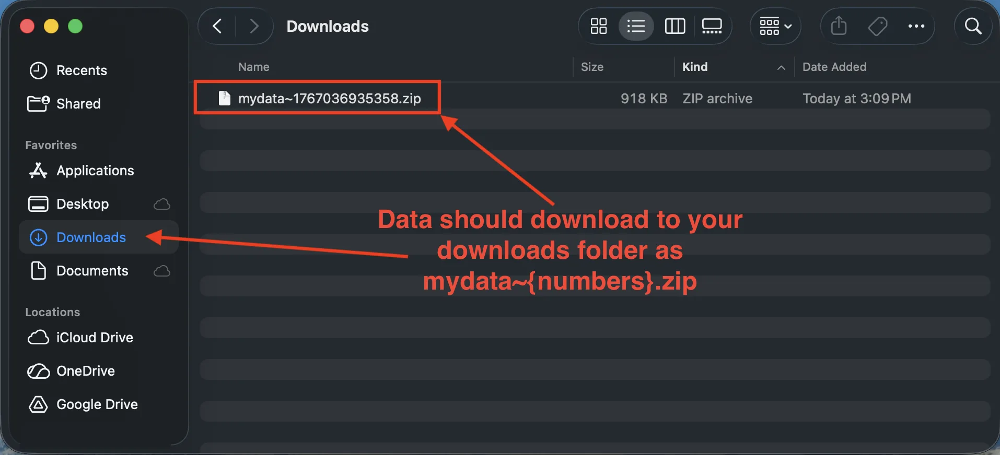

Your Snapchat memories
deserve the right date.
Snapchat exports break your photo timeline — every memory shows today's date. DateBack reads the hidden metadata and restores the original, so your 2018 memories actually stay in 2018.
v1.5.4 · macOS 11+ · Windows 10+



Snapchat breaks your timeline.
DateBack fixes it.
Every photo exported from Snapchat carries today's date. DateBack reads the hidden memories_history.json file and writes the original capture date back into each file — permanently.
Memory from 2016

Memory from 2025

Your entire photo timeline collapses to a single day. Every memory — years apart — looks like it was taken today.
Merge overlays
automatically.
Snapchat exports overlay text and drawings as separate files. DateBack composites them back together into one complete, properly-dated memory — no manual work required.


Three steps. Done in minutes.
DateBack handles all the complexity behind the scenes.
Open DateBack
The app automatically finds your downloaded Snapchat ZIP files. No manual searching required.
Choose & Start
Pick a destination and select Computer or Cloud Mode. Hit Start Processing and DateBack takes over.
Upload Anywhere
Your memories arrive in cloud-ready batches with correct dates — ready for Google Photos, iCloud, or anywhere.
Built for large exports.
No compromises.
Generic tools crash on large libraries and strip your metadata. DateBack was purpose-built for Snapchat exports—no manual scripting required.
EXIF Date Correction
Reads the hidden memories_history.json from your Snapchat export and injects the original capture date into each file's metadata. Your 2018 memories will actually stay in 2018 — not get buried under today's date.
Cloud Mode — No Disk Space Needed
Have 50GB of memories but only 10GB free? Cloud Mode processes in batches of 500 files, pausing so you can upload and clear space before continuing. Works with iCloud, Google Drive, OneDrive, Dropbox, and Box.
Smart Batching
Uploading 20,000 files to Google Photos at once crashes your browser every time. DateBack automatically organizes your memories into neat batches of 500 — making cloud uploads smooth, reliable, and crash-free.
Smart Resume
Stop mid-way and restart without losing progress. DateBack tracks every processed file and picks up exactly where you left off — no duplicates, no missed memories, no starting over.
Own your memories.
Stop renting them.
Cloud subscriptions charge you every year to access what's already yours. DateBack is a one-time free download — you keep the files forever.
Save $240+ over the next 10 years by owning your data today.
Free for everyone.
No account, no payment, no activation key. Just download and recover your memories.
Free Download
Save your memories before they're gone. No strings attached.
- Unlimited photos & videos
- EXIF date correction
- Cloud Mode — zero disk space needed
- Smart resume — never lose progress
- Overlay merging
- macOS 11+ · Windows 10 / 11
If DateBack helped you recover memories, consider supporting the project.
Signed and verified by Apple. macOS Gatekeeper trusts it out of the box.
No cloud processing. Your photos never leave your device.
No sign-up. No tracking. No app analytics.
Response within 48 hours. support@dateback.app
Need help exporting
your Snapchat data?
Before DateBack can run, you need to download your memories from Snapchat. Follow these steps exactly — missing a toggle means your dates won’t restore.
Show step-by-step export guide (7 steps) +
Select your data
Go to Snapchat’s data download page and log in. Critical: make sure both “Export your Memories” and “Export JSON Files” are toggled ON. Without the JSON files, dates cannot be restored.

Choose date range
Scroll to the date filter and select “All Time” to get everything. Confirm your email address and click “Submit.”

Wait for processing
Snapchat will show a “Processing” status. This can take minutes to hours depending on your library size. You can close the tab — you’ll get an email when it’s ready.

Check your email
When your data is ready, Snapchat sends an email with a download link. Open it and click the link to return to the download page.

Access your exports
You’ll be taken back to the website. Look for your export under “Your exports” and click “See exports” if needed.
Download the ZIP file(s)
Click the Download button next to your export. If Snapchat split your library into multiple files, download every one and keep them all in the same folder.

Locate the files — don’t unzip
Open your Downloads folder. You’ll see files named mydata~[timestamp].zip, mydata~[timestamp]-1.zip, etc. Do not unzip them. Keep them all in the same folder. DateBack detects and handles them automatically.

Installation guide
From download to running in about two minutes.
Download the right file
From the GitHub release page, download -arm64.dmg for Apple Silicon, -x64.dmg for Intel Mac, or -x64-win.exe for Windows 10/11.
Open the installer
Mac: Double-click the .dmg and drag DateBack to your Applications folder.
Windows: Double-click the .exe — it installs silently with no admin rights needed.
Clear the security prompt
macOS Gatekeeper: Right-click DateBack in Applications → Open → click Open. Only needed once.
Windows SmartScreen: Click More info → Run anyway. Expected for new apps.
Open DateBack
Launch from Applications (Mac) or the Start menu (Windows). The app automatically finds your Snapchat ZIP files — no setup required.
Frequently asked questions
Is this safe? Do you see my photos?
Completely safe. DateBack processes everything locally on your Mac or PC — your photos never leave your device and are never seen by anyone else.
Does this work on Windows or Intel Macs?
Yes. Download -arm64.dmg for Apple Silicon (M1–M4), -x64.dmg for Intel Mac, or -x64-win.exe for Windows. On first launch, Windows SmartScreen may show a warning — click More info → Run anyway. This is expected for new apps.
My download is 100GB+. Will this work?
Yes. Cloud Mode was built exactly for this. It streams and processes one file at a time in batches of 500, pausing so you can upload before continuing. No crashes, no disk space issues, no memory limits.
What is Cloud Mode?
Cloud Mode processes your memories in batches of 500 and places each batch into a cloud folder you choose (iCloud Drive, Google Drive, OneDrive, Dropbox, or Box). After each batch, the app pauses so you can let it sync and free up space before moving on.
Snapchat gave me multiple ZIP files. What do I do?
This is normal for large exports. Download all files (mydata~[timestamp].zip, mydata~[timestamp]-1.zip, etc.) into the same folder without renaming them. DateBack automatically detects and processes them all together as one export.
Can I resume if I stop midway?
Yes. When you restart on an existing output folder, DateBack offers: Skip Already Processed (fast, recommended), Verify Files (slower but thorough), or Start Fresh. Your progress is never lost.
Is DateBack really free?
Yes. Free download, no account, no payment, no activation key. If it helped you recover memories you thought were lost, you can optionally support the project.
macOS says DateBack cannot be opened
On first launch, right-click DateBack in Applications and choose Open, then click Open in the macOS prompt. This is a standard Gatekeeper step for newly downloaded apps and only appears once.
My ZIP is missing memories_history.json
Your Snapchat export was requested without the right options. Return to Snapchat’s data download page and make sure both “Export your Memories” and “Export JSON Files” are toggled ON before submitting a new request.
I’m getting an error I can’t fix
Go to Help → Export Support Logs in the app menu. Email the ZIP along with a description to support@dateback.app. We respond within 48 hours and will fix it.
Troubleshooting
The download page is confusing. Which file do I need?
Open the latest GitHub release and look for two .dmg files. Download DateBack-...-arm64.dmg if you have an Apple Silicon Mac (M1, M2, M3, M4), or DateBack-...-x64.dmg if you have an Intel Mac. Not sure which? Click → About This Mac — look for “Apple M” (Silicon) or “Intel Core” (Intel). Windows users: download the -x64-win.exe installer.
Not a recognized cloud folder
Cloud Mode only accepts folders inside a supported sync service. If you see “Not a recognized cloud folder. Choose iCloud Drive, Google Drive, OneDrive, Dropbox, or Box.” — pick a folder that lives inside one of those five services. Folders set up via symlinks are not supported.
Retry Corrupted Files doesn’t work
The retry feature requires a detailed_report.json file created by the previous processing run. If that file is missing, the app will show “No detailed_report.json found. Run full processing first.” Complete a full processing run first, then use Retry Corrupted Files from the completion screen.
Open Output Folder doesn’t open anything
For security, DateBack only opens folders that were approved during the current session. If you restart the app or change your selected folder, the previous path is no longer active. Re-run processing with the same folder selected, or navigate to it manually in Finder. In Cloud Mode this button opens your cloud destination folder, not the local output folder.
DateBack found fewer ZIP files than I downloaded from Snapchat
DateBack looks for all ZIP files from the same export in the same folder. Make sure every file you downloaded (mydata~[timestamp].zip, mydata~[timestamp]-1.zip, etc.) is in the same folder — don’t move some to a subfolder or rename them. If you’ve already moved them around, put them all back together in one folder, then use Find My Zip Automatically or drag the folder into DateBack.